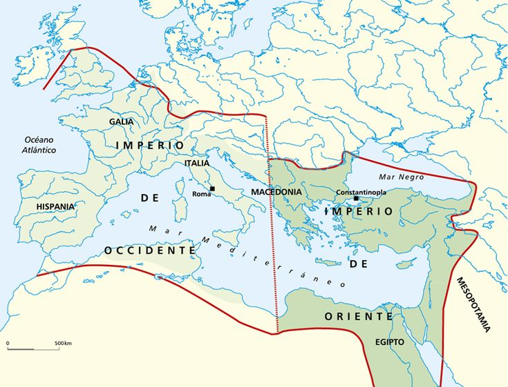
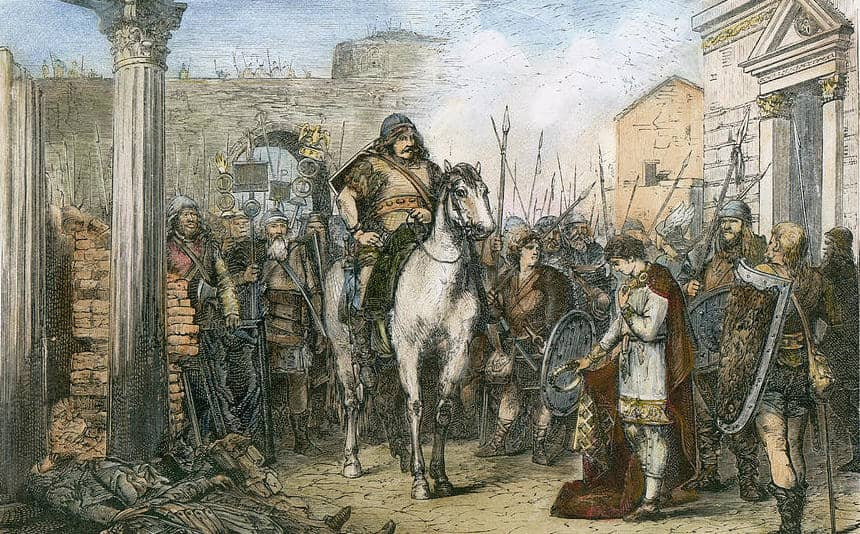
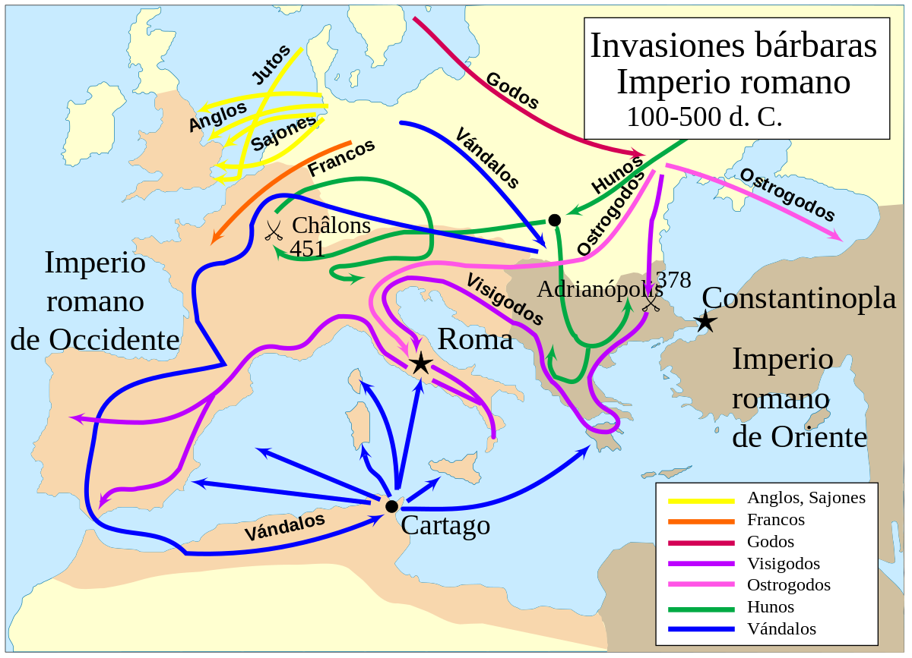
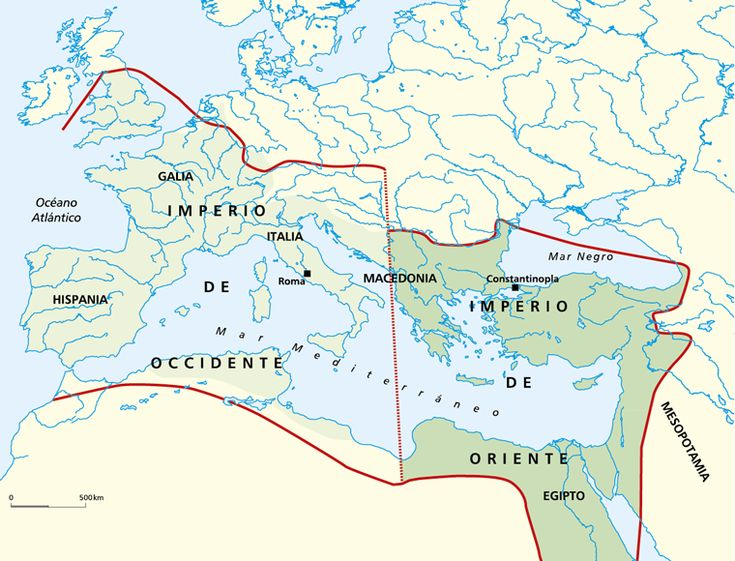
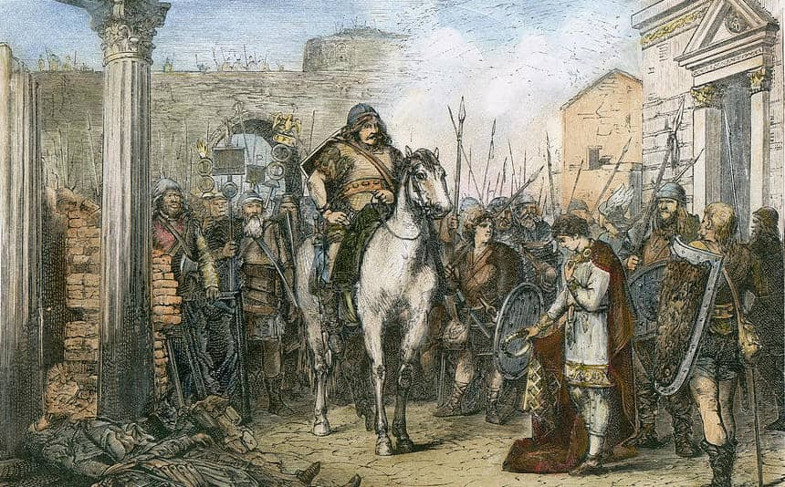
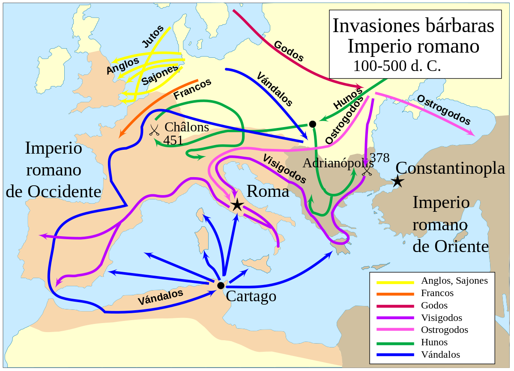
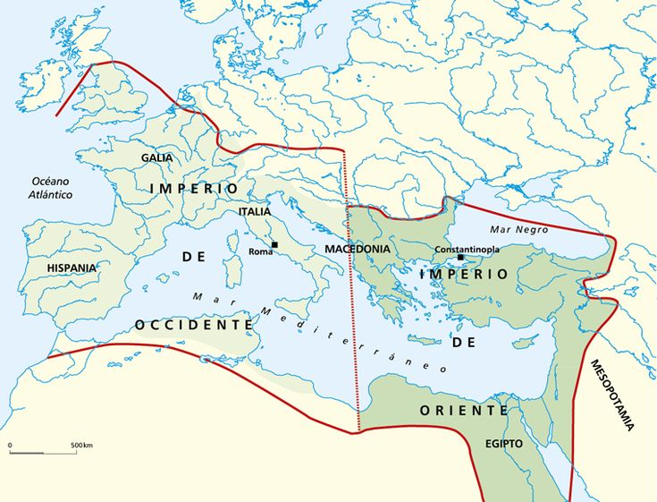
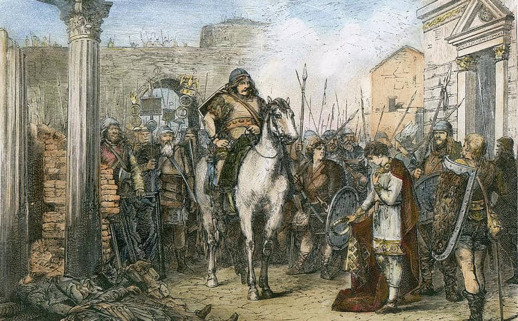
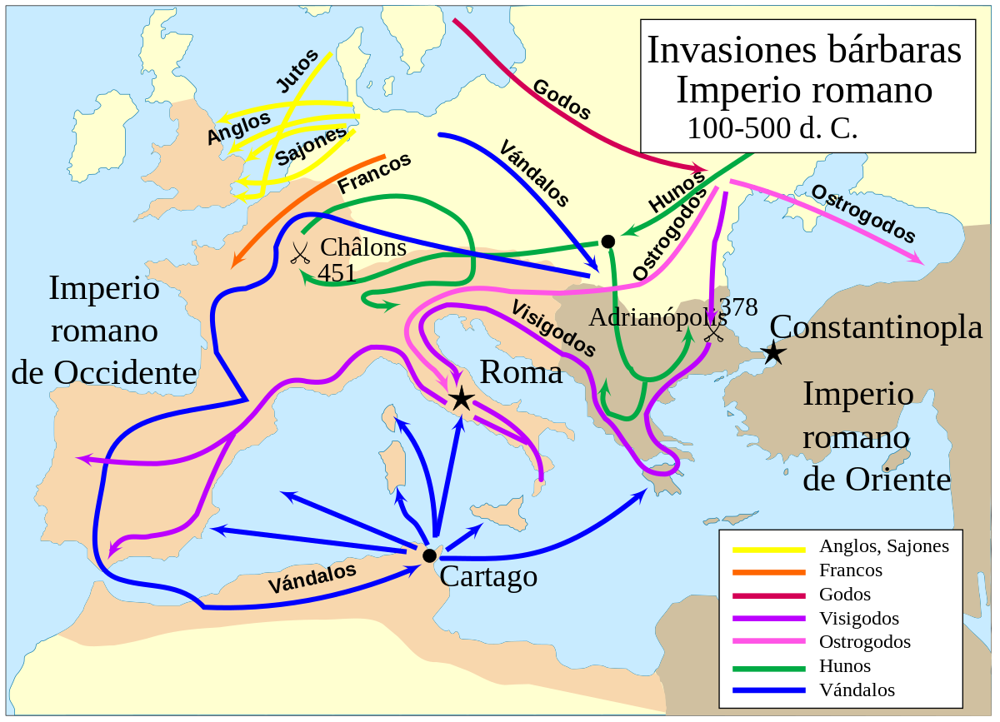

La Caída del Imperio Romano de Occidente ocurrió en el año 476 d.C., cuando el último emperador, Rómulo Augústulo, fue depuesto por el líder germano Odoacro. Este evento marcó el fin de la Antigüedad y el inicio de la Edad Media en Europa.
El Imperio Romano enfrentaba desde hacía siglos una profunda crisis política, económica y militar. La presión de los pueblos bárbaros, las luchas internas por el poder y la corrupción contribuyeron al debilitamiento del Estado.
En 476 d.C., el general Odoacro derrocó al joven emperador Rómulo Augústulo y se proclamó rey de Italia. Aunque el Imperio Romano de Oriente continuó en pie durante siglos más, este hecho simbolizó el colapso del poder romano en Occidente.
La caída del Imperio Romano significó una transformación radical del mundo occidental. Dio paso a la fragmentación del territorio en reinos germánicos, el feudalismo, y el fortalecimiento de la Iglesia como poder central.
A pesar de su colapso político, la cultura, el derecho y la arquitectura romanas continuaron influyendo en Europa durante siglos. Muchas instituciones modernas tienen sus raíces en Roma.


